Префектура Симанэ · острова Оки · природа и люди
Острова Оки: геопарк ЮНЕСКО, святилища мореходов и остров, где вырос дед актёра
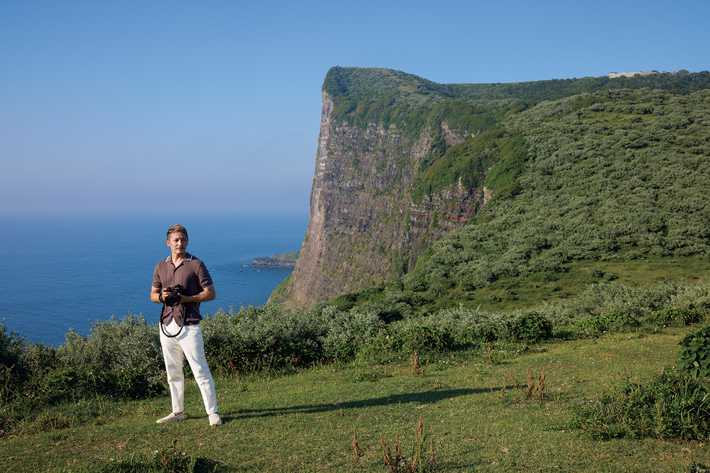
Острова Оки лежат в Японском море, в нескольких часах пути на пароме от Хонсю. Мы проехали по ним вместе с актёром, чьи дед и отец родились на Нисиносиме, и смотрели на скалы, святилища и деревни его глазами.
Острова
Геопарк посреди Японского моря
Архипелаг Оки находится в 40–80 км к северу от полуострова Симанэ. Это четыре обитаемых острова и больше 180 мелких. В 2013 году Оки получили статус Всемирного геопарка ЮНЕСКО, и среди японских геопарков это единственный, целиком лежащий на отдалённых островах.
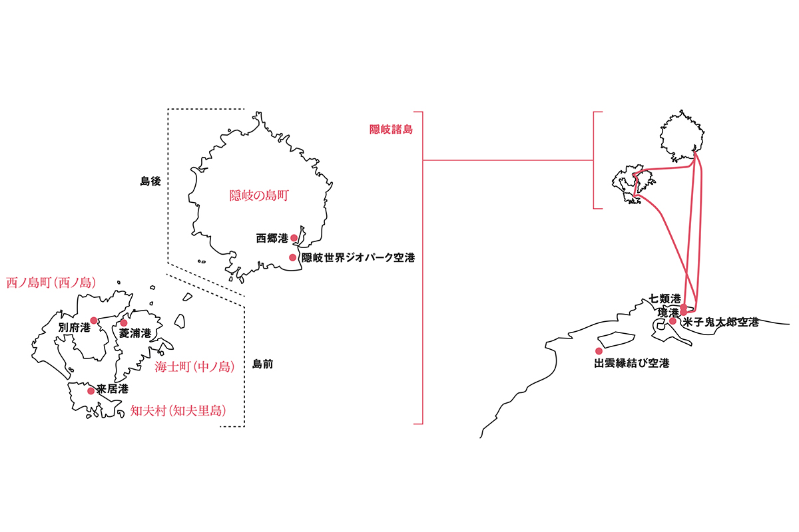
Вулканы и штормы оставили здесь отвесные обрывы и скалы причудливых форм, у островов своя флора и фауна, а жизнь людей рядом с суровой природой создала особую культуру.
Мы смотрели на Оки глазами приключенческого туризма. Такая поездка не сводится к развлечениям: путешественник живёт на месте, ходит пешком и понимает, как устроена земля и как на ней живут люди. После неё иначе смотришь и на свою жизнь.
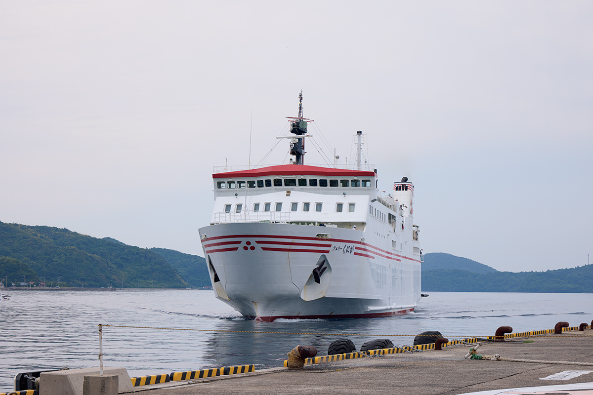
Герой
Остров, где жил дед
Нашим проводником стал актёр и фотограф, родившийся в 1980 году в префектуре Айти. Его дед и отец выросли на Нисиносиме, одном из островов группы Додзэн, и сам он ездит сюда с детства, поэтому замечает то, мимо чего турист пройдёт. В этот раз он ходил по Оки со своей камерой «Лейка».
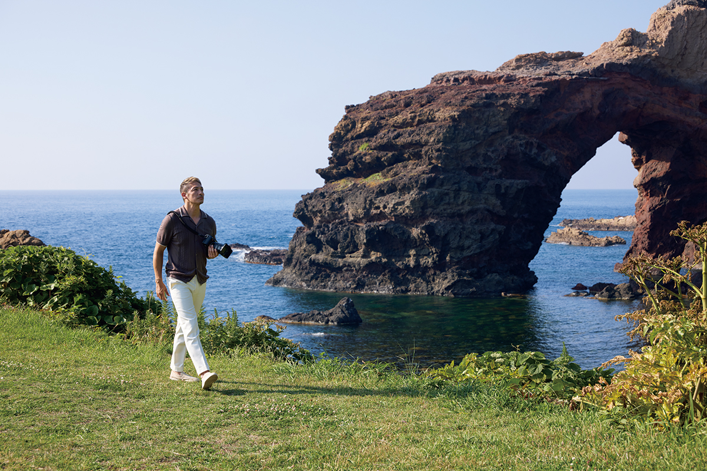
Сила волн и ветра, создавших Матэнгай, ощущается сразу. К скале ведёт тропа от побережья Кунига, где стоит каменная арка Цутэнкё. Местами она идёт круто вверх, поэтому нужна удобная обувь.
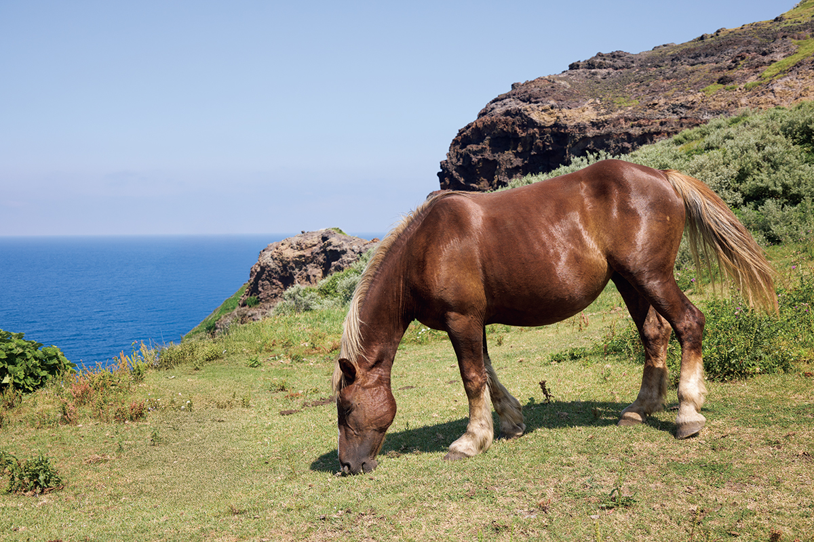
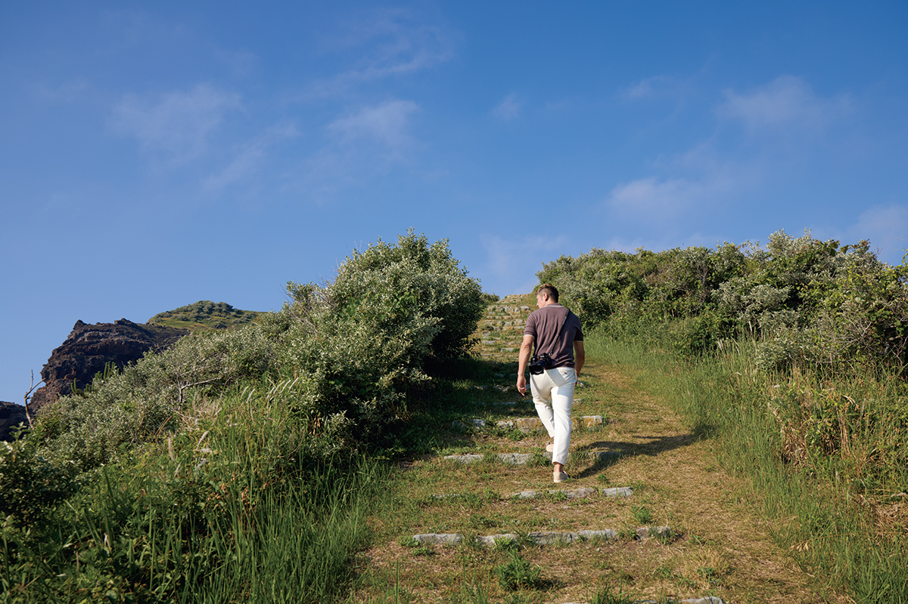
В 2026 году на втором этаже здания туристической ассоциации Нисиносимы в порту Бэппу, куда приходят паромы, показывали снимки, которые наш спутник сделал на острове.
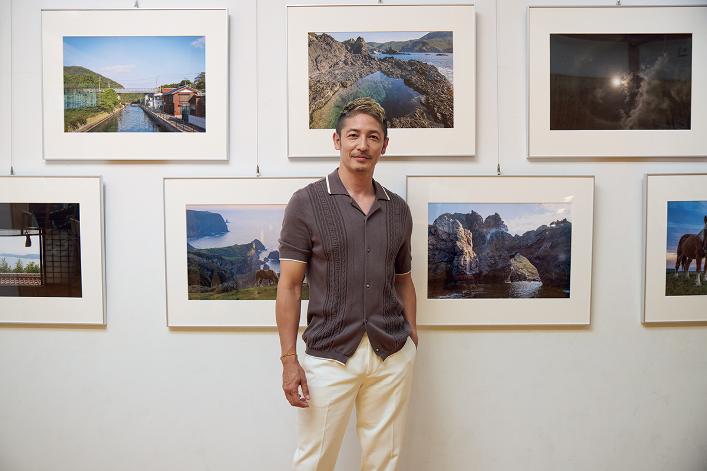
Вера
Острова богов и мореходов
Понять, как жили люди на Оки, невозможно без веры. Считается, что в эпоху Эдо здесь было около 300 святилищ, и больше сотни сохранили свои постройки до сих пор. А если считать скалы и деревья, которым поклоняются как богам, священных мест не счесть. В реестре святилищ «Энгисики», составленном в начале X века, четыре святилища высшего ранга находятся на Оки, а значит, острова с древности считались очень важными.
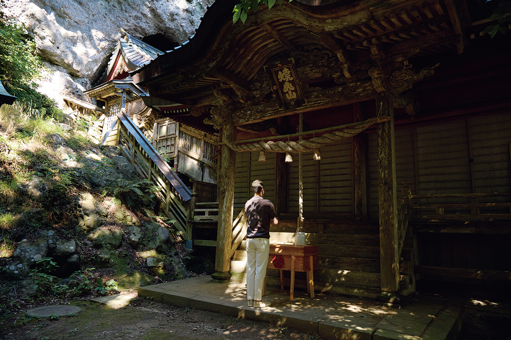
Люди появились на Оки очень рано. Около 30 000 лет назад здесь уже знали месторождения качественного обсидиана, и плавания на острова начались почти одновременно с заселением Японского архипелага. Позже Оки стали местом ссылки знатных особ. Здесь окончил жизнь император Го-Тоба (1180–1239), проигравший в 1221 году борьбу с сёгунатом, а в 1332 году сюда сослали императора Го-Дайго (1288–1339), который через год бежал и вернул себе власть. Высоких изгнанников отправляли именно сюда, потому что острова были богаты и припасами, и культурой.
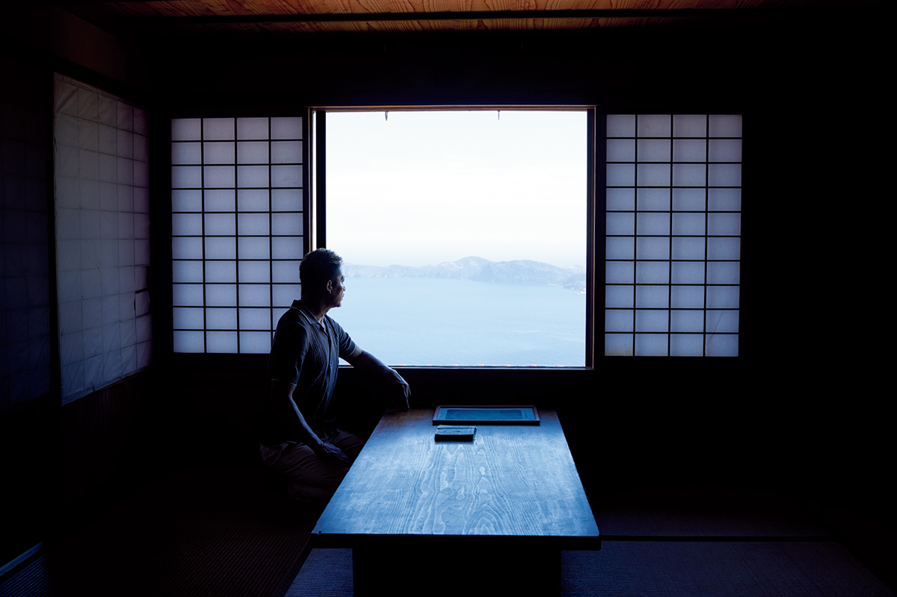
В эпоху Эдо острова процветали как стоянка торговых судов китамаэбунэ, ходивших вдоль побережья Японского моря. Божество святилища Такухи на Нисиносиме охраняет мореплавание, и моряки шли к нему за защитой. Святилищу Юрахимэ больше тысячи лет молятся о хорошем улове и спокойном море.
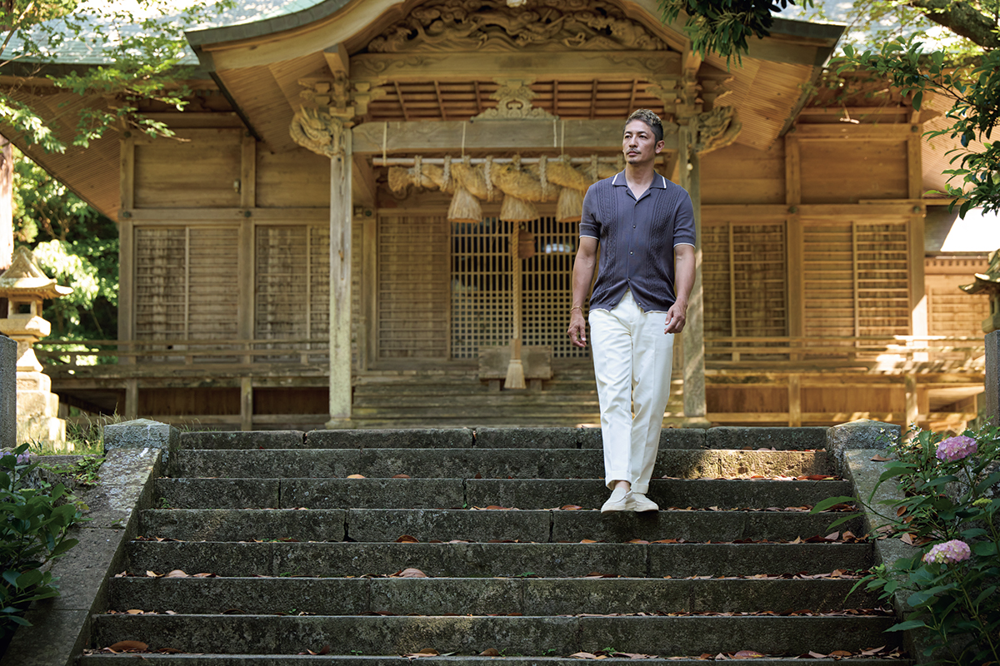
Предание рассказывает, что богиня Юрахимэ переправлялась к здешнему берегу в кадке, и кальмар дёрнул её за руку. С тех пор в искупление кальмары каждый год сами приходили в бухту огромными стаями. На пляже Икаёсэ, «месте, куда приходят кальмары», вплоть до середины XX века их почти каждый год можно было ловить руками, а сторожевые хижины стояли вплотную друг к другу.
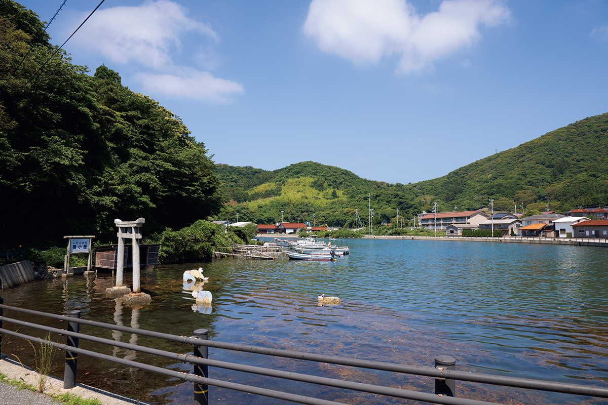
Святилище Такухи
- Адрес
- префектура Симанэ, уезд Оки, Нисиносима, Мита, 1294
- Телефон
- +81 8514-7-8888 (туристическая ассоциация Нисиносимы)
- Часы работы
- территория открыта всегда
Святилище Юрахимэ и пляж Икаёсэ
- Адрес
- префектура Симанэ, уезд Оки, Нисиносима, Ураго, 922
- Часы работы
- территория святилища открыта всегда
Жизнь
Канал, закат и миска сазаэ
Канал Фунахики, пересекающий Нисиносиму, тоже рассказывает о людях, которые живут морем. Раньше лодки перетаскивали по суше между внутренним заливом и открытым морем, отсюда и старое название места, Фунакоси, «перевоз лодок». В 1915 году канал соединил залив с деревнями и рыбные места в открытом море, рыбалка и перевозка грузов стали гораздо проще, и канал превратился в главную артерию острова. Сегодня по нему ходят и прогулочные катера к побережью Кунига.
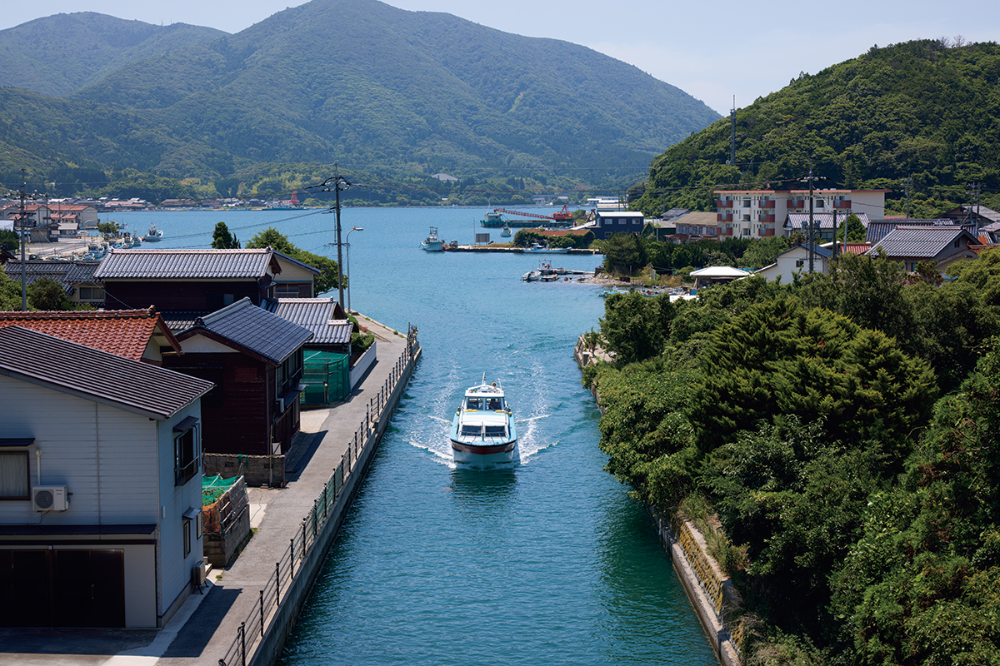
Сами острова Оки появились в результате извержений около 6 млн лет назад и с тех пор почти не сдвинулись. А обрывы вроде Матэнгая и арки Цутэнкё море начало активно размывать лишь 7000 лет назад, когда поднялся его уровень. По меркам истории Земли это одно мгновение. Пейзаж меняется постоянно, и тем ценнее застать его именно таким, какой он сейчас.
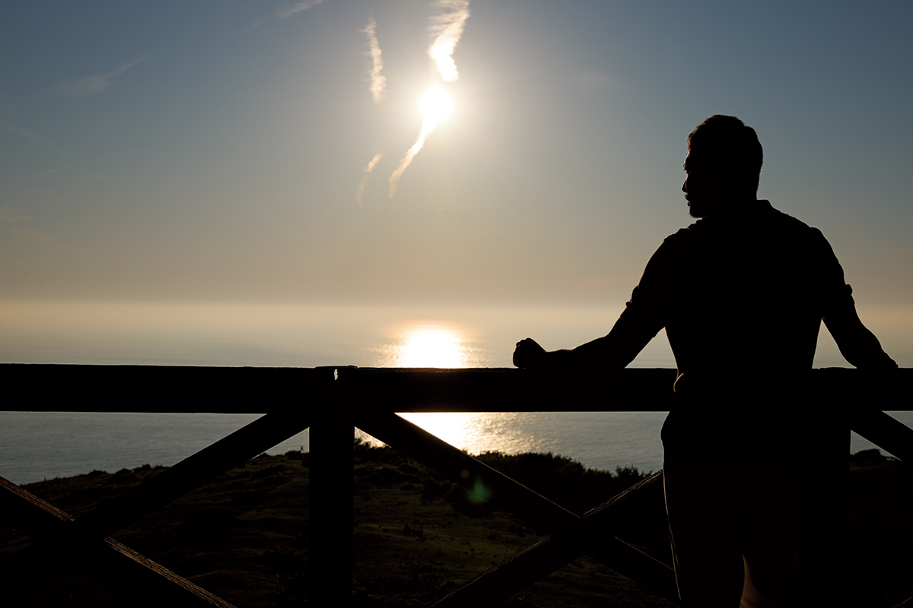
После прогулок хочется попробовать то, чем живёт остров. В ресторане «Консэю» подают миску риса с сазаэ, морской улиткой: в ней и мясо, и печень моллюска, и даже водоросли, которыми он питается. Это тот самый улов, о котором молились моряки, и лучшая награда за день на острове. По данным сайта ресторана, из-за нехватки сазаэ блюда из неё временно не готовят, поэтому перед визитом стоит уточнить меню.
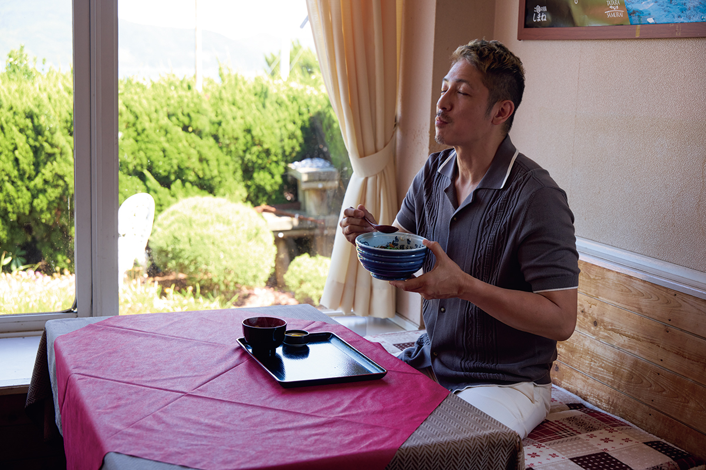
С высокого холма над заливом смотрит на воду гостиница «Кунигасо». Почти из всех номеров виден спокойный внутренний залив Додзэн, а в большой бане с панорамными окнами хорошо отдыхать после активного дня.
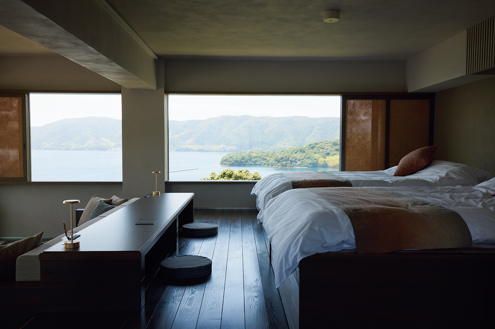
Канал Фунахики
- Адрес
- префектура Симанэ, уезд Оки, Нисиносима, Мита, 3443
Смотровая площадка Акао
- Адрес
- префектура Симанэ, уезд Оки, Нисиносима, Ураго, дорога Акао
Ресторан «Консэю»
- Адрес
- префектура Симанэ, уезд Оки, Нисиносима, Мита, 2152-1
- Телефон
- +81 8514-7-8671
- Часы работы
- 11:15–13:30
- Выходные
- нерегулярные
Гостиница «Кунигасо»
- Адрес
- префектура Симанэ, уезд Оки, Нисиносима, Ураго, 192
- Телефон
- +81 8514-6-0301
- Номера
- 20
- Цены / Вход
- от 17 569 иен за ночь с ужином и завтраком (с налогом и обслуживанием)
- Сайт
- kunigasou.com
Дого
Остров Дого: откуда всё взялось
С Нисиносимы уезжать не хочется, но паром идёт дальше, на Дого, самый большой остров архипелага. У порта Сайго стоит Музей природы Оки, он же входные ворота геопарка: здесь объясняют то, что по одному пейзажу не прочитать.
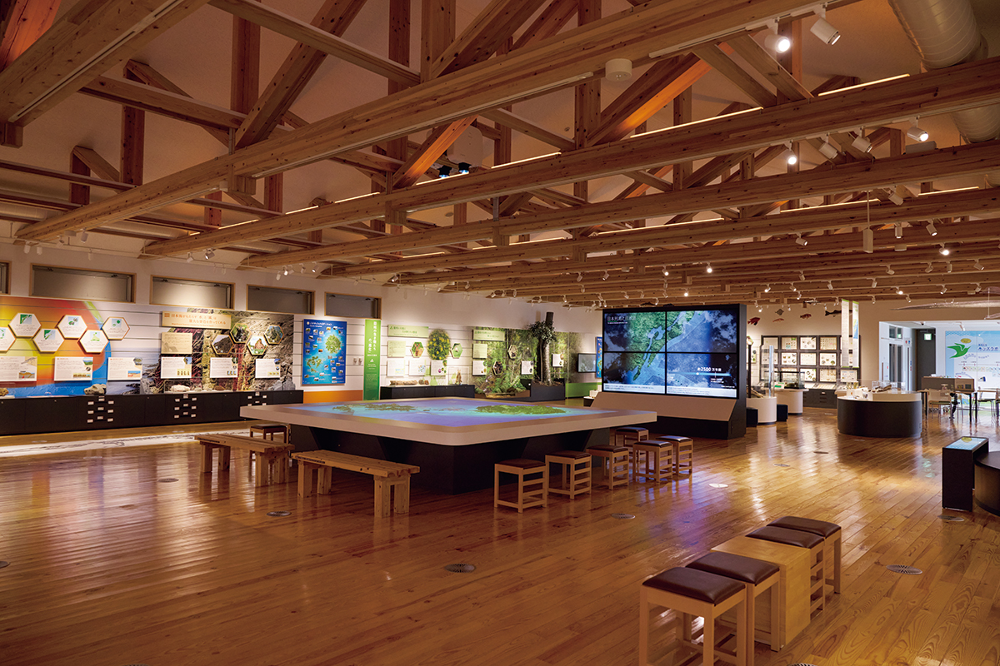
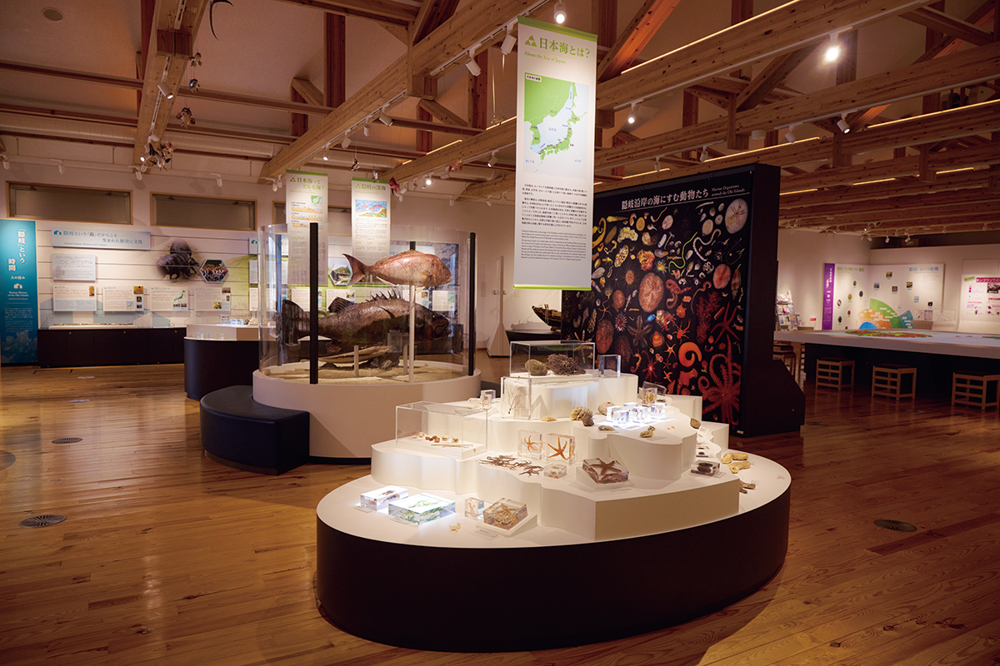
«Если проследить, почему скалы, природа и культура стали такими, всегда придёшь к истории самой земли»
сотрудник организации по развитию геопарка Оки
Стоит перед поездкой по красивым местам задать себе вопрос «почему?», и острова будут выглядеть совсем иначе.
Например, на побережье здесь растут рядом южные и северные растения и даже высокогорные виды. Такое редко где встретишь, и вырасти это смогло потому, что острова то соединялись с большой землёй, то снова отделялись. По камням можно прочитать и то, что когда-то эта земля была частью материка. Глубокие корни есть и у прозвища «острова богов»: говорят, что сюда собираются боги с Кюсю, из Идзумо и из древней области Ямато.
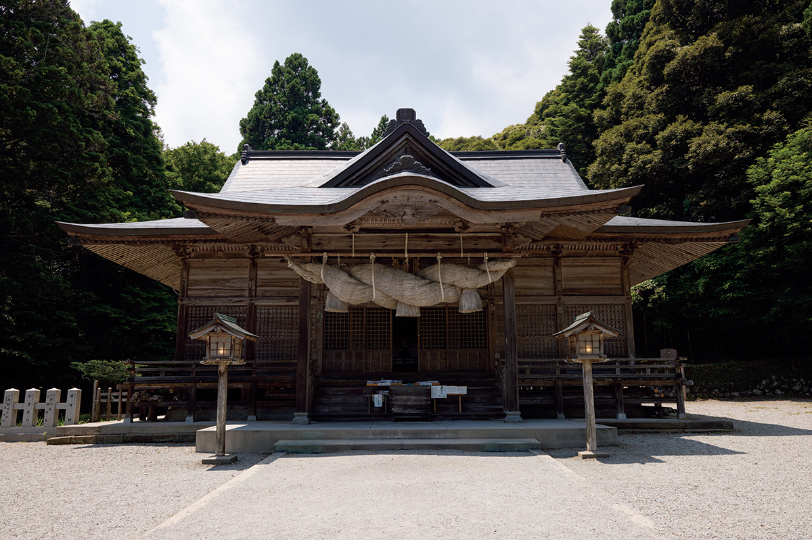
Природа и культура здесь сложно переплетаются и при этом складываются в стройное целое. Цель такой поездки не только красивые виды, но и истории за ними, и дома после неё мир вокруг ощущается ближе.
Кедры, которым сотни лет
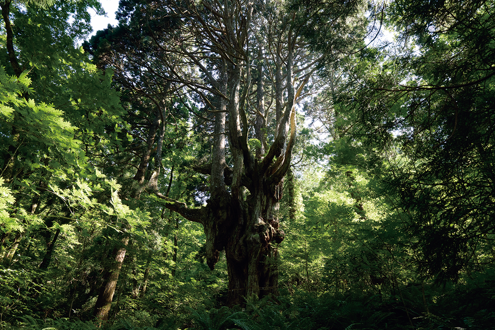
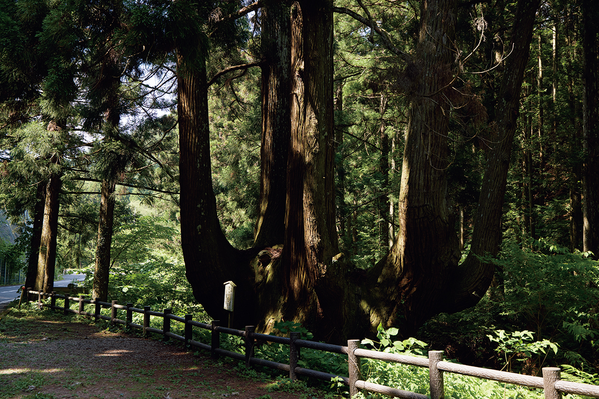
Сазаэ у парома и ужин в старом доме
Напротив паромного терминала Сайго работает закусочная «Сазаэмура», где можно запросто попробовать дары моря Оки. Миска риса с сазаэ под мягким омлетом стоила 1000 иен в 2026 году и не похожа на ту, что подают на Нисиносиме. Пропускать не стоит и крупные скальные устрицы, от 800 иен в 2026 году.
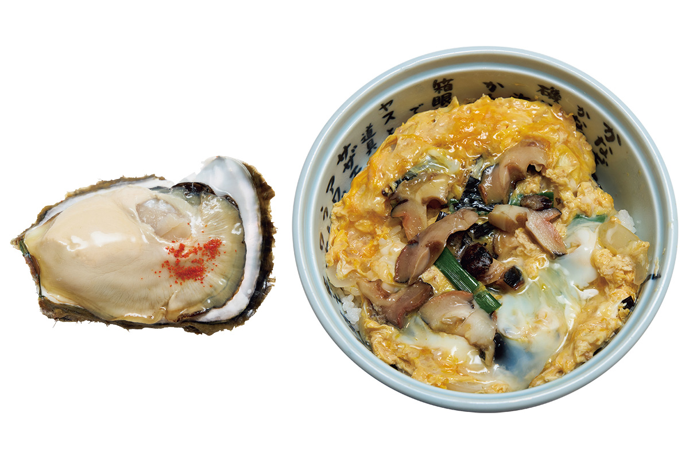
В деревне Иго на самом севере Дого стоит «Синъясики», гостиница с рестораном, которая принимает одну группу гостей в день. Дому около 120 лет. Здесь готовят итальянскую кухню из сезонных продуктов острова и подают к ней вино и другие хорошие напитки. Дом сливается с тихой деревней, и жить здесь хочется неспешно.
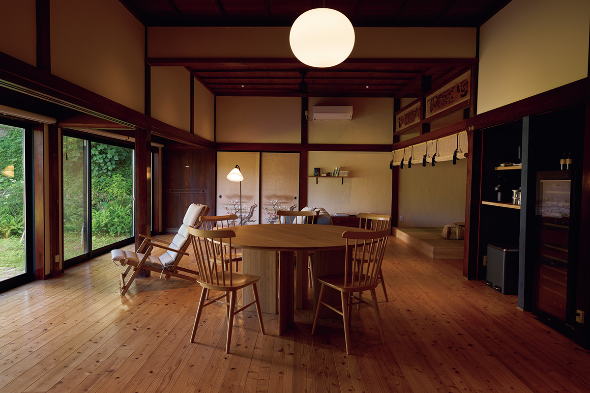
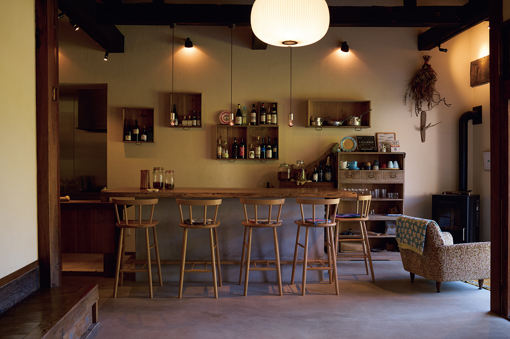
Музей природы Оки
- Адрес
- префектура Симанэ, уезд Оки, Окиносима, Накамати, Мэнуки-но-ён, 61
- Телефон
- +81 8512-2-1583
- Часы работы
- 9:00–17:00 (вход до 16:45)
- Выходные
- 2-й и 4-й вторник месяца, новогодние праздники
- Цены / Вход
- взрослые 500 иен, школьники 250 иен
Святилище Тамавакасу-но-микото
- Адрес
- префектура Симанэ, уезд Оки, Окиносима, Симониси, 701
- Телефон
- +81 8512-2-0571
- Часы работы
- территория открыта всегда
Кедры Кабурасуги и Ивакура-но титисуги
- Адрес
- префектура Симанэ, уезд Оки, Окиносима, Накамура (Кабурасуги); Фусэ (Титисуги)
«Сазаэмура», у паромного терминала
- Адрес
- префектура Симанэ, уезд Оки, Окиносима, Накамати, Мэнуки-но-ён, 53-1
- Телефон
- +81 80-2473-0613
- Часы работы
- 11:00–15:30
- Выходные
- вторник
«Синъясики»
- Адрес
- префектура Симанэ, уезд Оки, Окиносима, Иго, 636
- Телефон
- +81 80-3063-3473
- Номера
- один дом
- Цены / Вход
- от 55 000 иен за ночь с ужином и завтраком (с налогом и обслуживанием)
Маршрут
Три дня на Оки
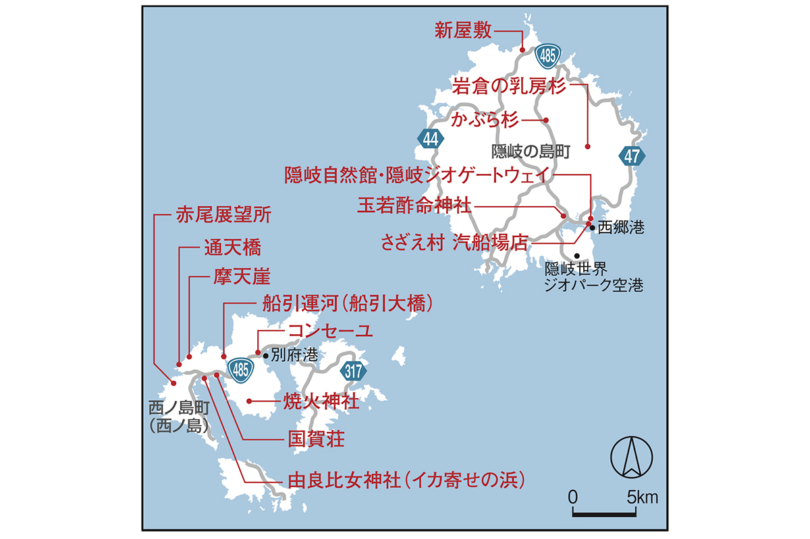
В 2026 году программа «Оки-току» действует с 1 марта по 30 ноября, и её удобно учесть при планировании. Вот маршрут, по которому ехали мы.
День первый
- 9:00 паром из порта Ситируи на Нисиносиму
- 13:45 прибытие в порт Бэппу, прокат машины
- 14:30 святилище Юрахимэ и вера островитян
- 15:30 канал Фунахики и морская жизнь острова
- 16:30 прогулка к Матэнгаю и арке Цутэнкё
- 18:30 закат со смотровой площадки Акао
- 19:00 заселение в «Кунигасо»
День второй
- 8:30 святилище Такухи в горах
- 11:30 обед в «Консэю»
- 14:00 паром из порта Бэппу на Дого
- 15:10 прибытие в порт Сайго, прокат машины
- 15:30 Музей природы Оки: как возникли острова
- 16:30 святилище Тамавакасу-но-микото и кедр Яосуги
- 18:00 заселение в «Синъясики»
День третий
- 9:00 кедр Кабурасуги
- 10:00 кедр Ивакура-но титисуги
- 12:00 обед в «Сазаэмуре»
- 15:40 паром из порта Сайго на Хонсю, в порт Ситируи
Взгляд
Остров, который учит довольствоваться
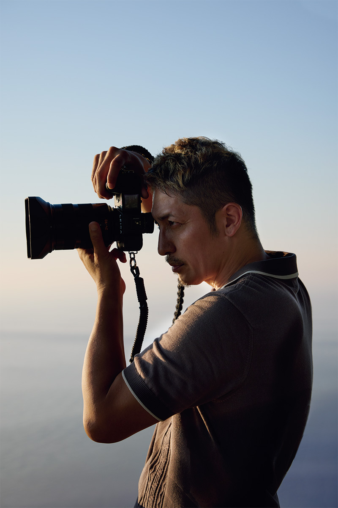
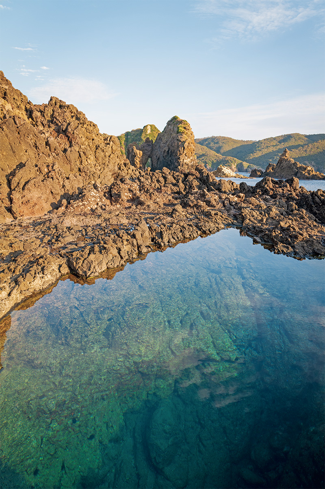
В детстве, вспоминает он, дед смотрел с ним на море прямо перед домом и рассказывал, какая там плавает рыба. Купались они на пляже, где почти никого не было.
«Дед жил так, будто знал меру: берёг то, что есть. Глядя на него, я и почувствовал, чем хорош остров»
актёр, герой путешествия
Многое здесь осталось таким же, как тогда, и от этого ему спокойно. Нетронутая земля, которую видели ещё люди древности, будит азарт первооткрывателя и сама наводит на мысли об истории Земли. Рукотворного мало, и глаза здесь отдыхают.
«Хочется, чтобы и дети смотрели здесь не в телефон, а на то, что перед ними»
актёр, герой путешествия
Его радует, что статус геопарка ЮНЕСКО сделал Оки известнее, но он говорит и о мере. Возможно, природа и уклад сохранились именно потому, что сюда трудно добраться.
Летом он советует пробовать скальных устриц и сазаэ, зимой желтохвоста и лакедру. Днём гулять, вечером отдыхать не спеша, а если что-то непонятно, спрашивать местных.
«Заметить не только виды, но и связь с природой и людьми, богатство самых обычных минут. Буду рад, если у вас получится такое путешествие»
актёр, герой путешествия
Фото: Хидэмори Ватанабэ.